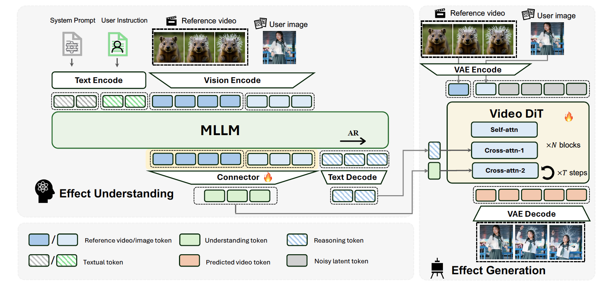
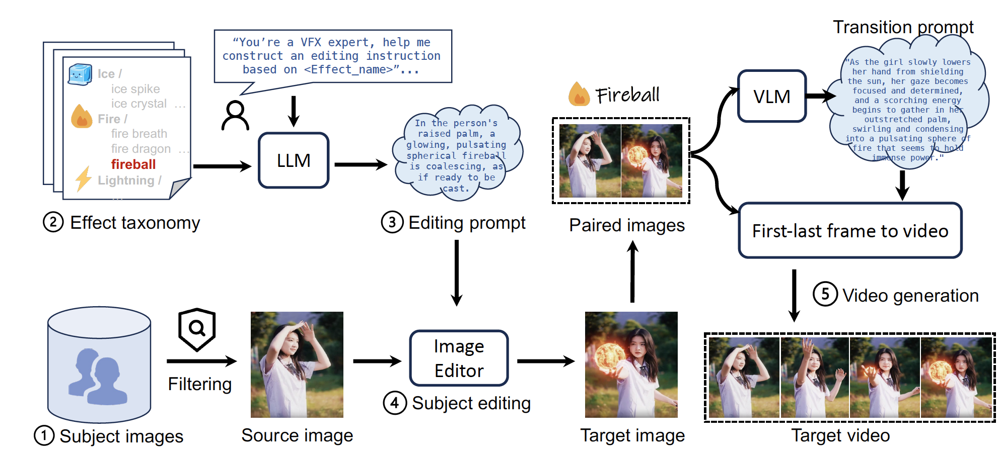

EffectMaker: Leveraging Reasoning and Generation for Customized Visual Effect Creation
EffectMaker: Leveraging Reasoning and Generation for Customized Visual Effect Creation

Abstract
Visual effects (VFX) are essential for enhancing the expressiveness and creativity of video content, yet producing high-quality effects typically requires expert knowledge and costly production pipelines. Existing AIGC systems face significant challenges in VFX generation due to the scarcity of effect-specific data and the inherent difficulty of modeling supernatural or stylized effects. Moreover, these approaches often require per-effect fine-tuning, which severely limits their scalability and generalization to novel VFX. In this work, we present EffectMaker, a unified reasoning–generation framework that enables reference-based VFX customization. EffectMaker employs a multimodal large language model to interpret high-level effect semantics and reason about their adaptation to a target subject, while a diffusion transformer leverages in-context learning to capture fine-grained visual cues from reference videos. These two components form a semantic–visual dual-path guidance mechanism that enables accurate, controllable, and effect-consistent synthesis without per-effect fine-tuning. Furthermore, we construct EffectData, the largest and high-quality synthetic dataset containing 100K videos across 2K VFX categories, to enhance generalization and scalability. Experiments show that EffectMaker achieves superior visual quality and effect consistency over state-of-the-art baselines, offering a scalable and flexible paradigm for customized VFX generation.
Method
|
Overview of our model architecture. Given a reference VFX video and a target image, on the reasoning side, an MLLM extracts high-level semantic cues of the reference video, providing abstract effect descriptions that serve as semantic guidance. On the generation side, a video DiT model leverages in-context generation to capture fine-grained visual details from the reference, and generates a target video with consistent visual effect. |
||
|  |
Dataset Construction
|
To address the scarcity of existing VFX datasets, we propose a data synthesis pipeline that (1) collects and curates subject images, (2) establishes a taxonomy of VFX categories, (3) leverages a large language model to automatically generate editing instructions, (4) employs an image editing model to produce target images with visual effects, and (5) integrates transition descriptions with a first-and-last-frame video generation model to synthesize dynamic videos. Ultimately, this pipeline enables the construction of a high-quality VFX video dataset. |
||
|  |
EffectMaker Gallery
BibTeX
@article{effectmaker,
title={EffectMaker: Leveraging Reasoning and Generation for Customized Visual Effect Creation},
author={Yang, Shiyuan and Li, Ruihuang and Tao, Jiale and Shao, Shuai and Lu, Qinglin and Liao, Jing},
year={2026}
}